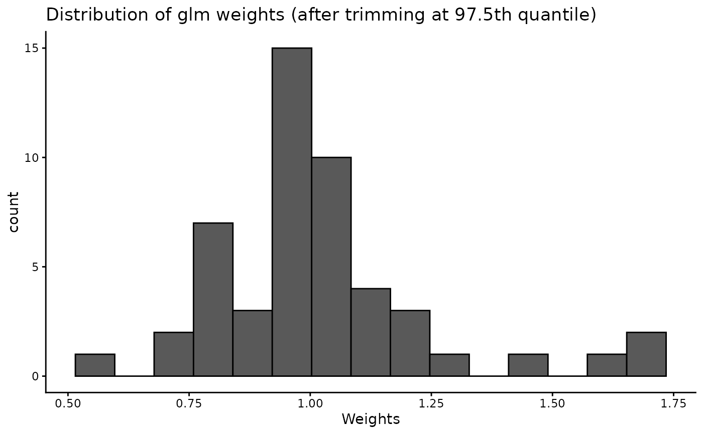

Trims IPTW balancing weights with heavy right tails by populating all weight values above a given quantile with the weight value of that quantile.
Usage
trimWeights(
exposure,
outcome,
weights,
quantile = NA,
home_dir = NULL,
verbose = TRUE,
save.out = TRUE
)Arguments
- exposure
name of exposure variable
- outcome
name of outcome variable with ".timepoint" suffix
- weights
list of IPTW weights output from createWeights()
- quantile
(optional) numeric value between 0 and 1 of quantile value at which to trim weights (default is 0.95)
- home_dir
path to home directory (required if save.out = TRUE)
- verbose
(optional) TRUE or FALSE indicator for user output (default is TRUE)
- save.out
(optional) TRUE or FALSE indicator to save output and intermediary output locally (default is TRUE)
See also
WeightIt::trim(),
https://search.r-project.org/CRAN/refmans/WeightIt/html/trim.html which
this function wraps
Examples
f <- createFormulas(exposure = "A",
exposure_time_pts = c(1, 2, 3),
outcome = "D.3",
tv_confounders = c("A.1", "A.2", "A.3", "B.1", "B.2", "B.3"),
ti_confounders = "C",
type = "full",
save.out = FALSE)
#> USER ALERT: Please manually inspect the full balancing formula below:
#> The full formula for A - D.3 at A time point 1 is:
#> A.1 ~ C
#> <environment: 0x557f7809fc60>
#>
#> USER ALERT: Please manually inspect the full balancing formula below:
#> The full formula for A - D.3 at A time point 2 is:
#> A.2 ~ A.1 + B.1 + C
#> <environment: 0x557f7809fc60>
#>
#> USER ALERT: Please manually inspect the full balancing formula below:
#> The full formula for A - D.3 at A time point 3 is:
#> A.3 ~ A.1 + A.2 + B.1 + B.2 + C
#> <environment: 0x557f7809fc60>
#>
test <- data.frame(ID = 1:50,
A.1 = rnorm(n = 50),
A.2 = rnorm(n = 50),
A.3 = rnorm(n = 50),
B.1 = rnorm(n = 50),
B.2 = rnorm(n = 50),
B.3 = rnorm(n = 50),
C = rnorm(n = 50),
D.3 = rnorm(n = 50))
w <- createWeights(data = test,
exposure = "A",
outcome = "D.3",
formulas = f,
save.out = FALSE)
#> For the cbps weighting method, the median weight value is 0.94 (SD = 0.45; range = 0.49-3).
#>

t <- trimWeights(exposure = "A",
outcome = "D.3",
weights = w,
save.out = FALSE)
#> Trimming weights to 95%.
#>
#> For the A-D.3 relation, following trimming at the 0.95 quantile, the median weight value is 0.94 (SD= 0.31; range= 0.49-2).
#>
 t <- trimWeights(exposure = "A",
outcome = "D.3",
weights = w,
quantile = 0.75,
save.out = FALSE)
#> Trimming weights to 75%.
#>
#> For the A-D.3 relation, following trimming at the 0.75 quantile, the median weight value is 0.94 (SD= 0.24; range= 0.49-1).
#>
t <- trimWeights(exposure = "A",
outcome = "D.3",
weights = w,
quantile = 0.75,
save.out = FALSE)
#> Trimming weights to 75%.
#>
#> For the A-D.3 relation, following trimming at the 0.75 quantile, the median weight value is 0.94 (SD= 0.24; range= 0.49-1).
#>